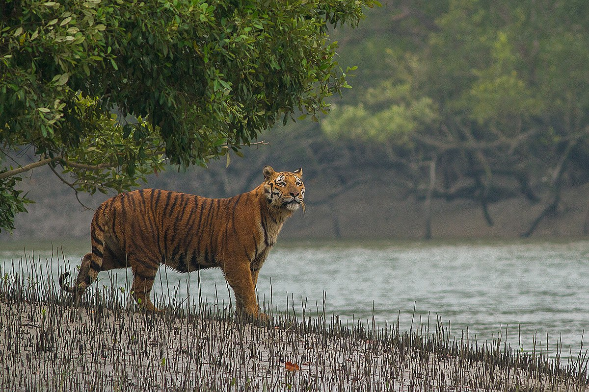
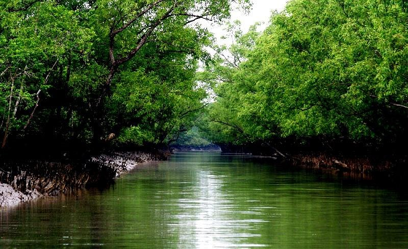

The Sundarbans
Sundarbans, formerly Sunderbunds, vast tract of forest and saltwater swamp forming the lower part of the Padma (Ganges [Ganga])-Brahmaputra River delta in southeastern West Bengal state, northeastern India, and southern Bangladesh. The tract extends approximately 160 miles (260 km) west-east along the Bay of Bengal from the Hugli River estuary in India to the western segment of the Meghna River estuary in Bangladesh and reaches inland for about 50 miles (80 km) at its broadest point. A network of estuaries, tidal rivers, and creeks intersected by numerous channels, it encloses flat, densely forested, marshy islands. The total area of the Sundarbans, including both land and water, is roughly 3,860 square miles (10,000 square km), about three-fifths of which is in Bangladesh.
 The name Sundarbans is thought to be derived from sundri or sundari (Heritiera fomes), the name of the large mangrove trees that are most plentiful in the area. The forestland transitions into a low-lying mangrove swamp approaching the coast, which itself consists of sand dunes and mud flats. Mangrove forests constitute about two-fifths of the Sundarbans region’s overall surface area, with water covering roughly half of that area. The landscape is constantly being transformed by the erosional forces of the sea and wind along the coast and by the enormous loads of silt and other sediments that are deposited along the myriad estuaries. Human activity has also altered the landscape, notably through forest removal, which accelerates erosion. In addition, because considerable amounts of river water have been diverted upstream for irrigation and other uses, salinity in the mangrove swamps has moved farther inland, especially in the Indian sector of the territory.
Sundari, gewa or gengwa (Excoecaria agallocha), nipa palms (Nypa fruticans), and other halophytic (salt-tolerant) species are the dominant flora in the mangrove swamps. The Sundarbans region is renowned as a refuge for a variety of animal species, many of them rare and endangered. Notably, it is one of the last preserves of Bengal tigers (Panthera tigris tigris), which are found in relative abundance there. Other mammals include spotted deer, wild boars, otters, wildcats, and Ganges river dolphins (Platanista gangetica), but several species that once inhabited the region—including Javan rhinoceroses, guar, water buffalo, and spotted deer—are now believed to be extinct there. Several dozen reptile and amphibian species are found in the Sundarbans, notably crocodiles, Indian pythons, cobras, and marine turtles. The region is home to more than 250 bird species—both seasonal migrants and permanent residents—including hornbills, storks and other waders, kingfishers, white ibis, and raptors such as sea eagles.
 Much of the area has long had the status of a forest reserve, but conservation efforts in India were stepped up with the creation of the Sundarbans Tiger Reserve in 1973. Sundarbans National Park, established in 1984, constitutes a core region within the tiger reserve; it was designated a UNESCO World Heritage site in 1987. In addition, three noncontiguous wildlife sanctuaries have been set up in Bangladesh’s portion of the Sundarbans. The sanctuaries and areas adjacent to them were collectively named a World Heritage site in 1997. UNESCO has also demarcated the entire Sundarbans region as a biosphere reserve.